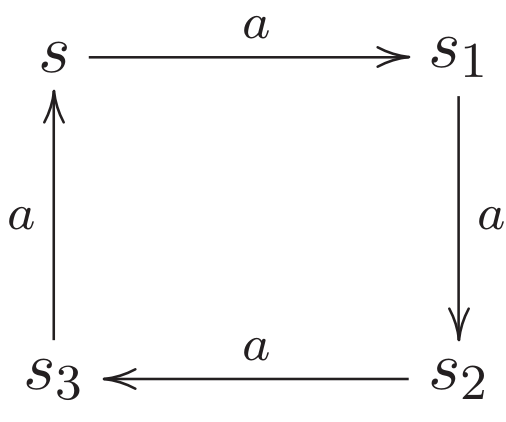

author: niplav, created: 2021-10-14, modified: 2021-11-25, language: english, status: in progress, importance: 2, confidence: likely
This page contains some solutions to exercises from the textbook “Reactive Systems” by Ingólfsdóttir et al. 2007.
Give a CCS process which describes a clock that ticks at least once and may stop ticking after each clock tick.
$\text{Clock} \overset{\text{def}}{=} (\text{tick}.\mathbf{0}+\text{tick}.\text{Clock})$
Give a CCS process which describes a coffee machine that may behave like that given by (2.1) but may also steal the money it receives and fail at any time.
This exercise is not quite well-defined. Should it sometimes take the money and offer nothing in return, but continue functioning, or should it actually fail sometimes and break down? The former case would be described by
$\text{CTM} \overset{\text{def}}{=} \text{coin}.(\text{CTM}+\overline{\text{coffee}}.\text{CTM}+\overline{\text{tea}}.\text{CTM})$,
the latter by
$\text{CTM} \overset{\text{def}}{=} \text{coin}.(\text{CTM}+\mathbf{0}+\overline{\text{coffee}}.\text{CTM}+\overline{\text{tea}}.\text{CTM})$
Hey look! $+$ is commutative here!
A finite process graph
$T$is a quadruple$(\mathcal{Q}, A, \delta, q_0)$, where
•$\mathcal{Q}$is a finite set of states,
•$A$is a finite set of labels,
•$q_0 \in \mathcal{Q}$is the start state, and
•$\delta: \mathcal{Q} \times A \rightarrow 2^{\mathcal{Q}}$is the transition function.Using the operators introduced so far, give a CCS process that describes
$T$.
where $\mathbf{+}$ is supposed to be a big iterative operator like
$\sum$, if only I could get MathJax to accept \scalerel. The equation
is nested infinitely deep at most places that result in a loop that
doesn't include $q_0$, and in some places end with $.T$, if $q_0
\in δ(q_n,a)$.
Consider the following LTS:

Define the LTS as a triple
$(\text{Proc}, \text{Act}, \{\overset{α}{\rightarrow}|α \in \text{Act}\})$. Use sketches to illustrate the reflexive closure, symmetric closure and transitive closure of the binary relation$\overset{α}{\rightarrow}$?
The process, in triple form, is
$(\{s, s_1, s_2, s_3\}, \{a\}, \overset{a}{\rightarrow}=\{(s, s_1), (s_1, s_2), (s_2, s_3), (s_3, s)\})$.
I'm not sure about the sketch part, but I can try to describe the different closures.
The reflexive closure of $\overset{a}{\rightarrow}$ would additionally
contain the elements
$\{(s,s), (s_1, s_1), (s_2, s_2), (s_3, s_3)\}$.
The symmetric closure is similarly easy to generate: it additionally
contains the elements $\{(s_1, s), (s_2, s_1), (s_3, s_2), (s, s_3)\}$.
The transitive closure additionally contains the elements from the set
$\{(s, s_2), (s, s_3), (s_1, s_3), (s_1, s), (s_2, s), (s_2, s_1), (s_3, s_1), (s_3, s_2)\}$.
The set of reachable states includes all states: $p, p_1$ and $p_2$.
$a.b.A+B$ ✓$(a.\mathbf{0}.\overline{a}.A)\backslash \{a,b\}$ ✓$(a.\mathbf{0}|\overline{a}.A)\backslash \{a,τ\}$ ✗: $τ$ can't be excluded$a.B+[a/b]$ ✗: a renaming is not a process$τ.τ.B+\mathbf{0}$ ✓$(a.B+b.B)[a/b, b/a]$ ✓$(a.B+τ.B)[a/τ, b/a]$ ✓$(a.b.A+\overline{a}.\mathbf{0})|B$ ✓$(a.b.A+\overline{a}.\mathbf{0}).B$ ✗: the object in the parentheses is not a label, but a process$(a.b.A+\overline{a}.\mathbf{0})+B$ ✓$(\mathbf{0}|\mathbf{0})+\mathbf{0}$ ✓Identity relation is an equivalence relation, as well as the universal
relation is. The standard $\le$ relation is not an equivalence relation
(but it is a preorder, since it is an order). However, the parity relation
$M_2$ is.
To answer these questions, consider the coffee and tea machine CTM defined in (2.2) and compare it with the following machine:
You should be able to convince yourself that CTM and CTM' afford the same traces. (Do so!)
It suffices to show that traces of one recursive iteration of CTM and CTM'
are equivalent. The trace of CTM' is
$\{(\text{coin}, \overline{\text{coffee}}),(\text{coin}, \overline{\text{tea}})\}$
(choose at the beginning, then insert coin & get beverage), the trace
of CTM is
$\{(\text{coin}, \overline{\text{coffee}}), (\text{coin}, \overline{\text{tea}})\}$
(insert coin, then choose).
1. Do the processes (CA|CTM)\{coin, coffee, tea} and (CA|CTM')\{coin, coffee, tea} defined above have the same completed traces?
Yes. Both processes start able to making the coin transition. Then (CA|CTM') either finds itself in the coffee arm, makes the coffee transition and returns to the starting state, or gets stuck only emitting tea, but only accepting coffee. (CA|CTM) decides after the first coin transition; if CTM transitions into the tea arm, we have a deadlock, but if it transitions into the coffee arm, it can transition and returns to the starting state.
For them to have different traces, CTM in (CA|CTM) would need to decide which arm to transition into by knowing which transitions are available in CA, which isn't included in the formalism.
Both processes have traces that can be described by the regular expression
coin(,coffee,coin)*
2. Is it true that if P and Q are two CCS processes affording the same completed traces and L is a set of labels then P\L and Q\L also have the same completed traces?
Yes. The restriction operator \ only restricts transitions outside of the process it applies to, inside that process the same transitions can still occur.
The strong bisimulation of $P$ and $Q$ is
${\mathcal{R}}=\{(P,Q),(P,Q_2),(P_1,Q_1),(P_1,Q_3)\}$.
To show that this relation is a bisimulation, we examine all steps in the model:
For $(P,Q)$: $P$ transitions to $P_1$ via $a$, and $Q$
transitions to $Q_1$ via $a$, with $(P_1, Q_1)$ in $\mathcal{R}$.
$Q$ transitions to $Q_1$ via $a$, and $P$ transitions to $P_1$
via $a$, with the same relation as above.
For $(P,Q_2)$: $P$ transitions to $P_1$ via $a$, and $Q_2$
transitions to $Q_3$ via $a$, with $(P_1, Q_3)$ in $\mathcal{R}$.
$Q_2$ transitions to $Q_3$ via $a$, and $P$ transitions to $P_1$
via $a$, with the same relation as above.
For $(P_1,Q_1)$: $P_1$ transitions to $P$ via $b$, and $Q_1$
transitions to $Q$ via $c$, with $(P, Q)$ in $\mathcal{R}$
(the same holds for the transition action $b$ instead of $c$ and
$Q_2$ instead of $Q$).
$Q_1$ transitions to $Q$ via $b$, and $P_1$ transitions to $P$
via $b$, with the same relation as above (and, similarly, also with
$c$ and $Q_2$).
For $(P_1,Q_3)$: $P_1$ transitions to $P$ via $b$, and $Q_3$
transitions to $Q$ via $b$, with $(P, Q)$ in $\mathcal{R}$
(the same holds for the transition action $c$ instead of $b$ and
$Q_2$ instead of $Q_3$).
$Q_3$ transitions to $Q$ via $b$, and $P_1$ transitions to $P$
via $b$, with the same relation as above (and, similarly, also with
$c$ and $Q_2$ instead of $Q$).
This screams after a proof by induction.
Induction basis: If $σ$ is a label, that is, if there exists an action
$α=σ$, then the definitions for strong bisimulation and string
bisimulation coincide (I'm not gonna write it all out, sorry).
Induction assumption: Assume that if $σ$ is a sequence of actions, then
two states $s$ and $s'$ are string bisimilar off they are strongly
bisimilar.
Induction step:
String bisimilarity $\Rightarrow$ strong bisimilarity:
If we know that $s_1 \mathcal{R} s_2$ are string bisimilar
by a transition $σα$, where $α$ is a single action. Then there must be
some $s_1'', s_2''$ so that $s_1 \overset{σα}{\rightarrow} s_1''$
and $s_2 \overset{σα}{\rightarrow} s_2''$ and $s_1'' \mathcal{R} s_2''$,
and there must be some
$s_1'$, $s_2'$ so that $s_1 \overset{σ}{\rightarrow} s_1'$ and
$s_2 \overset{σ}{\rightarrow} s_2'$ with $s_1' \mathcal{R} s_2'$
(and the other way around, with $s_1$ and $s_2$ exchanged), where
$s_1'$ transitions to $s_1''$ via $α$. Then the induction
assumption holds, and we know that the states are also strongly bisimilar.
Strong bisimilarity $\Rightarrow$ string bisimilarity:
This is equivalent to the induction basis: if $s_1 \mathcal{R} s_2$
strongly bisimilar via $β$, then they are also string bisimilar via
$σ=β$.
$s \not \sim t$. Winning strategy for the attacker:
$t \overset{a}{\rightarrow} t_1$, defender answers with $s \overset{a}{\rightarrow} s_1$$t_1 \overset{b}{\rightarrow} t_2$, defender answers with $s_1 \overset{b}{\rightarrow} s_2$$s_2 \overset{b}{\rightarrow} s_2$, defender can't transition anywhere using $b$$s \sim u$. Winning strategy for the defender:
$(s, u)$
$\overset{a}{\rightarrow} s_1$, play $\overset{a}{\rightarrow} u_1$$\overset{a}{\rightarrow} u_1$, play $\overset{a}{\rightarrow} s_1$$(s_1, u_1)$
$\overset{b}{\rightarrow} s_2$, play $\overset{b}{\rightarrow} u_3$$\overset{b}{\rightarrow} u_3$, play $\overset{b}{\rightarrow} s_2$$(s_2, u_3)$
$\overset{b}{\rightarrow} s_2$, play $\overset{b}{\rightarrow} u_2$$\overset{b}{\rightarrow} u_2$, play $\overset{b}{\rightarrow} s_2$$\overset{a}{\rightarrow} s$, play $\overset{a}{\rightarrow} u$$\overset{a}{\rightarrow} u$, play $\overset{a}{\rightarrow} s$$(s_2, u_2)$
$\overset{b}{\rightarrow} s_2$, play $\overset{b}{\rightarrow} u_2$$\overset{b}{\rightarrow} u_2$, play $\overset{b}{\rightarrow} s_2$$\overset{a}{\rightarrow} s$, play $\overset{a}{\rightarrow} u$$\overset{a}{\rightarrow} u$, play $\overset{a}{\rightarrow} s$Strong bisimulation relating the pair of processes:
$\mathcal{R}=\{(u,s), (u_1, s_1), (u_3, s_2), (u_2, s_2)\}$.
$s\not \sim v$. Winning strategy for the attacker:
$s \overset{a}{\rightarrow} s_1$, defender answers with $v \overset{a}{\rightarrow} v_1$$s_1 \overset{b}{\rightarrow} s_2$
$v_1 \overset{b}{\rightarrow} v_2$
$s_2 \overset{b}{\rightarrow} s_2$$b$ from $v_2$$v_1 \overset{b}{\rightarrow} v_3$
$s_2 \overset{a}{\rightarrow} s$$a$ from $v_3$For example, you should be able to convince yourself that the LTS associated with the CCS expression
$a_1.\mathbf{0}|a_2.\mathbf{0}|\dots|a_n.\mathbf{0}$has$2^n$states.
Actually, I don't have a good idea of how to put this into LTS form?
I would have to invent a starting state $s_0$, or maybe a set of
$n$ starting states, or perhaps $2^n$ starting states? Then those
would transition to $\mathbf{0}$ via any subset of
$\{a_1, a_2, \dots, a_n\}$.
I should clarify how this is done.
Show that the set of strings $A^*$ over an alphabet $A$ with prefix
ordering $\le$ is a poset (prefix ordering is for all $s, t \in A^*: s \le t$
iff there exists a $w \in A^*$ so that $sw=t$).
$s$ is a prefix for $s$ with $w=ε$.$sw=t$ and $tw=s$, then $sw=tw$, so $s=t$ and $w=ε$.$r$ is a prefix for $s$ with $v$ and $s$ is a prefix for $t$ with $w$, then $r$ is a prefix for $t$ with $vw$.Is the poset
$(2^S, \subseteq)$totally ordered?
No: Let $S=\{a,b,c\}$, then it is the case that
$\{a,b\} \not \subseteq \{b,c\}$ and $\{b,c\} \not \subseteq \{a,b\}$.
Prove that the lub and the glb of
$X$are unique, if they exist.
$d$ must be an upper bound for $X$, and $d \sqsubseteq d'$ for every
upper bound $d' \in D$ of $X$. Per antisymmetry of $\sqsubseteq$,
there can be no $d'$ so that $d' \sqsubseteq d$ and $d \sqsubseteq
d'$ with $d' \not = d$. And for $d$ to be an upper bound, then it
must be comparable to every other upper bound of $X$, so there is no
uncomparable least other upper bound $d'$.
The same argument applies symmetrically to the greatest lower bound, and is not worth elaborating.
Least fixed point:
Start with $d=\emptyset$. Then $f^0(d)=\{2\}$, and $f^1(d)=\{2\}$
as well. So $\{2\}$ is the least fixed point.
Largest fixed point:
Start with $d=\{0,1,2\}$. Then $f^0(d)=\{1,2\}$, and
$f^1(d)=\{1,2\}$. So $\{1,2\}$ is the largest fixed point.
We note that if
$\mathcal{R}, \mathcal{S} \in 2^{(\text{Proc} \times \text{Proc})}$and$\mathcal{R} \subseteq \mathcal{S}$then$\mathcal{F}(\mathcal{R}) \subseteq \mathcal{F}(\mathcal{S})$, that is, the function$\mathcal{F}$is monotonic over$(2^{(\text{Proc} \times \text{Proc})}, \subseteq)$.
Assume that $\mathcal{R} \subseteq \mathcal{S}$, but
$\mathcal{F}(\mathcal{R}) \not \subseteq \mathcal{F}(\mathcal{S})$
(that is, $\mathcal{F}(\mathcal{S}) \subset \mathcal{F}(\mathcal{R})$).
Then there must be a $(p,q) \in \mathcal{F}(\mathcal{R})$
($p, q \in \text{Proc}$) that is not in $\mathcal{F}(\mathcal{S})$.
Then there are $(p', q') \in \mathcal{R}$ so that $p, q$ can transition
to $p', q'$ via some $α$, and $(p', q') \not \in \mathcal{S}$. But
that can't be the case, since we assumed that $\mathcal{R} \subseteq \mathcal{S}$.
This is a contradiction.